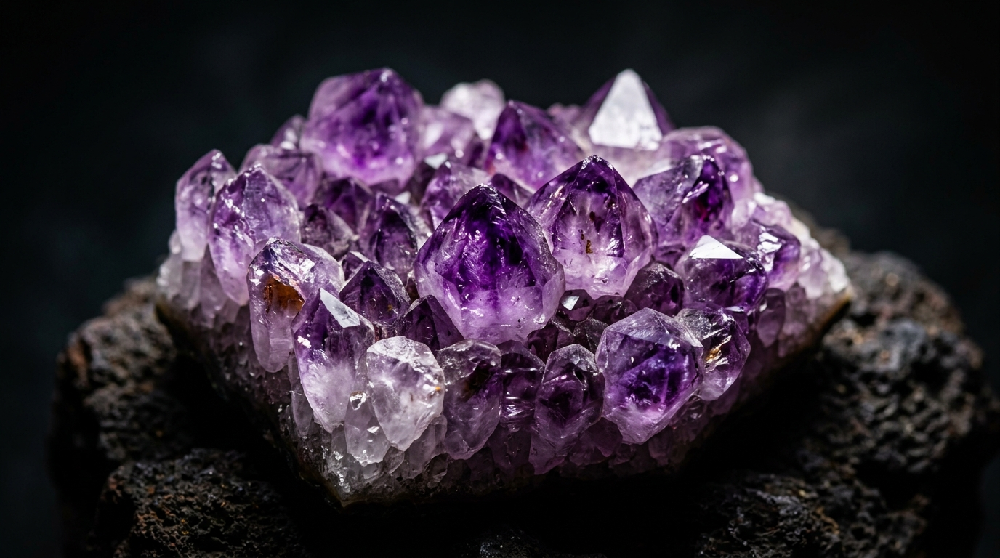

Amethyst: Healing Properties, History & the Purple Crown

With its deep, enchanting purple hues, amethyst is one of the most recognizable and beloved crystals in the world. Once considered as valuable as rubies and sapphires, this majestic stone has a rich history steeped in myth, royalty, and spiritual significance.
The Science of Purple Quartz
Amethyst is the purple variety of the quartz mineral species. Its signature color is created through a fascinating combination of iron impurities within the crystal lattice and natural irradiation from the surrounding earth over millions of years. The color can range from a pale, delicate lavender (often called Rose de France) to a deep, intense royal purple.
Mythology and History
The name "amethyst" comes from the Greek word amethystos, meaning "not intoxicated." According to ancient Greek mythology, the god of wine, Dionysus, created the stone out of a young maiden named Amethystos. As a result, the Greeks and Romans wore the stone and drank from amethyst goblets, believing it would prevent drunkenness.
During the Middle Ages, amethyst was highly prized by the Catholic Church. Bishops often wore amethyst rings, as the purple color symbolized piety, spiritual wisdom, and celibacy.
Crystal Healing and Chakra Associations
In the realm of crystal healing, amethyst is considered a master stone, vibrating at a very high spiritual frequency.
- Crown Chakra: Amethyst is strongly associated with the Crown and Third Eye chakras, promoting spiritual awareness, intuition, and a connection to higher consciousness.
- Stress Relief: It is widely used to calm the mind, relieve stress, and soothe anxiety.
- Sleep Aid: Placing an amethyst under the pillow is said to cure insomnia and encourage peaceful, lucid dreams.
| Property | Detail |
|---|---|
| Mineral | Quartz |
| Hardness | 7 on Mohs scale |
| Chakra | Crown & Third Eye |
Care and Identifying Real Amethyst
Amethyst is durable enough for daily wear, but prolonged exposure to direct sunlight can cause its beautiful purple color to fade. To cleanse your amethyst spiritually, bathe it in moonlight rather than sunlight. When identifying real amethyst, look for slight color zoning (uneven color distribution) and natural, irregular inclusions, as synthetic amethyst often looks perfectly uniform and flawless.
"Amethyst carries the energy of fire and passion, creativity and spirituality, yet bears the logic of temperance and sobriety."